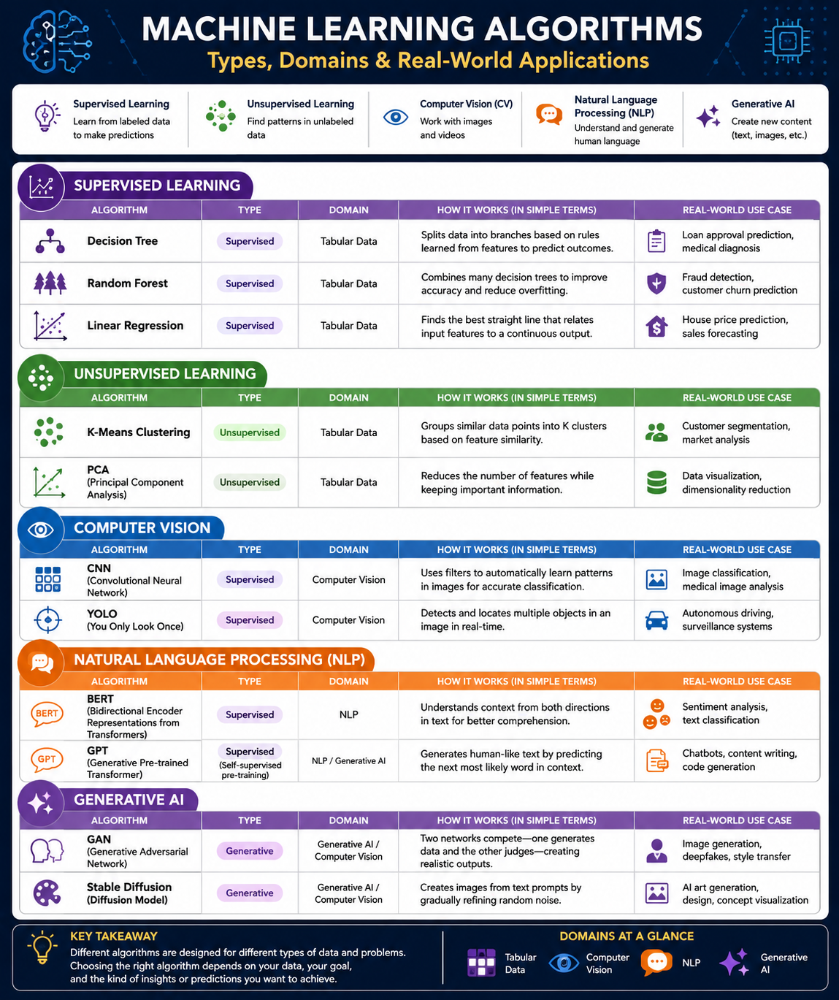

Title
Algorithm Types Visual Framework
Portfolio Artifact
An infographic that organizes machine learning algorithms by type, application domain, and practical use.

Artifact Information
Algorithm Types Visual Framework
This artifact provides a concise visual guide to major machine learning algorithms and the domains where they are commonly applied.
The infographic compares supervised and unsupervised algorithms while connecting them to tabular data, computer vision, NLP, and generative AI.
To demonstrate understanding of key algorithm categories, explain how they differ, and show where they are most useful in real-world AI work.
I reviewed course materials on AI, machine learning, deep learning, and generative AI, selected core algorithms across several domains, grouped them by type, and designed the information into a clear visual layout.
Canva, PNG export, GitHub Pages, HTML, and CSS.
This artifact shows my ability to synthesize technical information and present it in a way that is useful to learners, instructors, and future professional audiences.
It combines conceptual understanding with visual communication, making complex relationships between algorithm families easier to understand quickly.
Understanding which algorithms fit which domains is foundational for selecting appropriate approaches in AI and machine learning projects.
IWU AIML-501 course materials and supporting resources on AI, ML, deep learning, and generative AI.